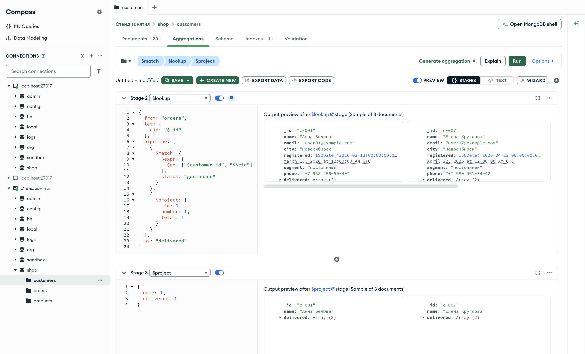

Справочник по MongoDB · модуль 6 · связи между коллекциями
6.2
$lookup
с конвейером
В главе 6.1 $lookup присоединял все документы с равным значением поля. Параметр pipeline задаёт конвейер, который обрабатывает найденные документы до того, как они попадут в массив: отбирает, сортирует, ограничивает, группирует. В главе разобраны let и переменные документа, короткая запись с полями связи, последние заказы покупателя, итоги внутри $lookup, конвейер без связи и связь по двум полям. Отдельно показана ошибка, при которой переменная превращается в строку.
- Категория
- Агрегация
- Уровень
- Начальный
- Связанные темы
- $lookup (глава 6.1), $expr (глава 2.8), $let и переменные $$ (глава 5.5), $group (глава 4.4), $sort и $limit (глава 4.1)
- Зачем это знать
- Присоединять не все связанные документы, а только нужные или уже посчитанные итоги: доставленные заказы, два последних заказа, сумму покупок
Как запускать примеры этой главы
mongodb-glava-6.2-python.zip, 62 КБmongodb-glava-6.2-ruby.zip, 62 КБmongodb-glava-6.2-go.zip, 67 КБmongodb-glava-6.2-cpp.zip, 65 КБ — все примеры главы готовыми программами, базы и стенд в Docker. В README.md — запуск в Docker, если Compass нет или он не подключается, и на установленном сервере с Compass, а также что должна напечатать каждая программа.lessons/ch6_2.py — пример вставляется в конец файлаlessons/ch6_2.rb — пример вставляется в конец файлаlessons/ch6_2.go — пример внутрь скобок в конце main, функции и типы — выше mainlessons/ch6_2.cpp — пример внутрь скобок в конце main, функции — выше maincd lessons, затем python ch6_2.pycd lessons, затем python3 ch6_2.py · в Docker: docker compose run --rm python lessons/ch6_2.pycd lessons, затем ruby ch6_2.rb · в Docker: docker compose run --rm ruby lessons/ch6_2.rbcd lessons, затем go run ch6_2.go · в Docker: docker compose run --rm go lessons/ch6_2.gocd lessons, затем g++ -std=c++17 ch6_2.cpp -o prog $(pkg-config --cflags --libs libmongocxx1) && ./prog · в Docker: docker compose run --rm cpp lessons/ch6_2.cpp§1let и pipeline
Оператор картотеки получает не просто номер покупателя, а поручение: «найди заказы покупателя c-001, но только доставленные». Поиск по номеру — то же, что в главе 6.1; добавилось условие, которое проверяется у каждой найденной карточки.
Такое поручение записывается параметром pipeline стадии $lookup. Это конвейер, который сервер выполняет над коллекцией from отдельно для каждого документа потока; его результат попадает в поле as. Внутри конвейера "$customer_id" — поле документа из from, то есть заказа. Поля документа потока, покупателя, внутри не видны. Их передают параметром let: он объявляет переменные, как vars у $let из главы 5.5. {"let": {"cid": "$_id"}} кладёт _id покупателя в переменную $$cid.
Переменная — часть выражения, поэтому сравнение с ней записывается через $expr из главы 2.8. Пример находит у трёх покупателей доставленные заказы и оставляет у каждого номер и сумму.
pipeline = [
{"$match": {"_id": {"$in": ["c-001", "c-007", "c-020"]}}},
{"$lookup": {
"from": "orders",
"let": {"cid": "$_id"},
"pipeline": [
{"$match": {
"$expr": {"$eq": ["$customer_id", "$$cid"]},
"status": "доставлен",
}},
{"$project": {"_id": 0, "number": 1, "total": 1}},
],
"as": "delivered",
}},
{"$project": {"name": 1, "delivered": 1}},
]
for doc in customers.aggregate(pipeline):
print(doc)
mongocxx::pipeline pipeline; pipeline.match(make_document( kvp("_id", make_document(kvp("$in", make_array("c-001", "c-007", "c-020")))))); pipeline.lookup(make_document( kvp("from", "orders"), kvp("let", make_document(kvp("cid", "$_id"))), kvp("pipeline", make_array( make_document( kvp("$match", make_document( kvp("$expr", make_document(kvp("$eq", make_array("$customer_id", "$$cid")))), kvp("status", "доставлен")))), make_document( kvp("$project", make_document(kvp("_id", 0), kvp("number", 1), kvp("total", 1)))))), kvp("as", "delivered"))); pipeline.project(make_document(kvp("name", 1), kvp("delivered", 1))); for (auto&& doc : customers.aggregate(pipeline)) { std::cout << bsoncxx::to_json(doc, bsoncxx::ExtendedJsonMode::k_relaxed) << std::endl; }
pipeline := mongo.Pipeline{
{{Key: "$match", Value: bson.D{
{Key: "_id", Value: bson.D{{Key: "$in", Value: bson.A{"c-001", "c-007", "c-020"}}}}}}},
{{Key: "$lookup", Value: bson.D{
{Key: "from", Value: "orders"},
{Key: "let", Value: bson.D{{Key: "cid", Value: "$_id"}}},
{Key: "pipeline", Value: bson.A{
bson.D{
{Key: "$match", Value: bson.D{
{Key: "$expr", Value: bson.D{
{Key: "$eq", Value: bson.A{"$customer_id", "$$cid"}}}},
{Key: "status", Value: "доставлен"}}}},
bson.D{
{Key: "$project", Value: bson.D{
{Key: "_id", Value: 0},
{Key: "number", Value: 1},
{Key: "total", Value: 1}}}}}},
{Key: "as", Value: "delivered"}}}},
{{Key: "$project", Value: bson.D{{Key: "name", Value: 1}, {Key: "delivered", Value: 1}}}},
}
cursor, _ := customers.Aggregate(ctx, pipeline)
for cursor.Next(ctx) {
var doc bson.D
cursor.Decode(&doc)
out, _ := bson.MarshalExtJSON(doc, false, false)
fmt.Println(string(out))
}
pipeline = [
{ "$match" => { "_id" => { "$in" => ["c-001", "c-007", "c-020"] } } },
{ "$lookup" => {
"from" => "orders",
"let" => { "cid" => "$_id" },
"pipeline" => [
{ "$match" => {
"$expr" => { "$eq" => ["$customer_id", "$$cid"] },
"status" => "доставлен",
} },
{ "$project" => { "_id" => 0, "number" => 1, "total" => 1 } },
],
"as" => "delivered",
} },
{ "$project" => { "name" => 1, "delivered" => 1 } },
]
customers.aggregate(pipeline).each { |doc| puts doc.inspect }
{'_id': 'c-001', 'name': 'Анна Белова', 'delivered': [{'number': '2026-0012', 'total': 222740}, {'number': '2026-0059', 'total': 217970}, {'number': '2026-0086', 'total': 192240}]}
{'_id': 'c-007', 'name': 'Елена Круглова', 'delivered': [{'number': '2026-0003', 'total': 86880}, {'number': '2026-0036', 'total': 354460}]}
{'_id': 'c-020', 'name': 'Егор Мельник', 'delivered': [{'number': '2026-0010', 'total': 120340}, {'number': '2026-0092', 'total': 89990}]}
{ "_id" : "c-001", "name" : "Анна Белова", "delivered" : [ { "number" : "2026-0012", "total" : 222740 }, { "number" : "2026-0059", "total" : 217970 }, { "number" : "2026-0086", "total" : 192240 } ] }
{ "_id" : "c-007", "name" : "Елена Круглова", "delivered" : [ { "number" : "2026-0003", "total" : 86880 }, { "number" : "2026-0036", "total" : 354460 } ] }
{ "_id" : "c-020", "name" : "Егор Мельник", "delivered" : [ { "number" : "2026-0010", "total" : 120340 }, { "number" : "2026-0092", "total" : 89990 } ] }
{"_id":"c-001","name":"Анна Белова","delivered":[{"number":"2026-0012","total":222740},{"number":"2026-0059","total":217970},{"number":"2026-0086","total":192240}]}
{"_id":"c-007","name":"Елена Круглова","delivered":[{"number":"2026-0003","total":86880},{"number":"2026-0036","total":354460}]}
{"_id":"c-020","name":"Егор Мельник","delivered":[{"number":"2026-0010","total":120340},{"number":"2026-0092","total":89990}]}
{"_id"=>"c-001", "name"=>"Анна Белова", "delivered"=>[{"number"=>"2026-0012", "total"=>222740}, {"number"=>"2026-0059", "total"=>217970}, {"number"=>"2026-0086", "total"=>192240}]}
{"_id"=>"c-007", "name"=>"Елена Круглова", "delivered"=>[{"number"=>"2026-0003", "total"=>86880}, {"number"=>"2026-0036", "total"=>354460}]}
{"_id"=>"c-020", "name"=>"Егор Мельник", "delivered"=>[{"number"=>"2026-0010", "total"=>120340}, {"number"=>"2026-0092", "total"=>89990}]}
У Анны Беловой три доставленных заказа, у Елены Кругловой и Егора Мельника — по два. Всего заказов у них 5, 8 и 2 (глава 6.1): конвейер отбросил заказы в других статусах. Найденные заказы — уже не полные документы: $project внутри конвейера оставил только номер и сумму.
| Шаг | Что делает | Документов |
|---|---|---|
| let | $$cid = "c-001" — из документа покупателя | — |
| $match · $expr | customer_id заказа равен $$cid | 120 → 5 |
| $match · status | только доставленные | 5 → 3 |
| $project | номер и сумма | 3 в поле delivered |
Конвейер выполняется для каждого покупателя заново, со своим значением $$cid. В одной стадии $match соединены условие с переменной и обычный фильтр по статусу.
§2Поля связи и pipeline вместе
Связь по равенству полей встречается чаще всего, поэтому localField и foreignField можно записать вместе с pipeline. Сервер сначала находит документы по полям связи, затем пропускает их через конвейер. let и $expr для этого не нужны. Пример считает доставленные заказы тех же покупателей.
pipeline = [
{"$match": {"_id": {"$in": ["c-001", "c-007", "c-020"]}}},
{"$lookup": {
"from": "orders",
"localField": "_id",
"foreignField": "customer_id",
"pipeline": [{"$match": {"status": "доставлен"}}],
"as": "delivered",
}},
{"$project": {"name": 1, "count": {"$size": "$delivered"}}},
]
for doc in customers.aggregate(pipeline):
print(doc)
mongocxx::pipeline pipeline; pipeline.match(make_document( kvp("_id", make_document(kvp("$in", make_array("c-001", "c-007", "c-020")))))); pipeline.lookup(make_document( kvp("from", "orders"), kvp("localField", "_id"), kvp("foreignField", "customer_id"), kvp("pipeline", make_array( make_document(kvp("$match", make_document(kvp("status", "доставлен")))))), kvp("as", "delivered"))); pipeline.project(make_document( kvp("name", 1), kvp("count", make_document(kvp("$size", "$delivered"))))); for (auto&& doc : customers.aggregate(pipeline)) { std::cout << bsoncxx::to_json(doc, bsoncxx::ExtendedJsonMode::k_relaxed) << std::endl; }
pipeline := mongo.Pipeline{
{{Key: "$match", Value: bson.D{
{Key: "_id", Value: bson.D{{Key: "$in", Value: bson.A{"c-001", "c-007", "c-020"}}}}}}},
{{Key: "$lookup", Value: bson.D{
{Key: "from", Value: "orders"},
{Key: "localField", Value: "_id"},
{Key: "foreignField", Value: "customer_id"},
{Key: "pipeline", Value: bson.A{
bson.D{{Key: "$match", Value: bson.D{{Key: "status", Value: "доставлен"}}}}}},
{Key: "as", Value: "delivered"}}}},
{{Key: "$project", Value: bson.D{
{Key: "name", Value: 1},
{Key: "count", Value: bson.D{{Key: "$size", Value: "$delivered"}}}}}},
}
cursor, _ := customers.Aggregate(ctx, pipeline)
for cursor.Next(ctx) {
var doc bson.D
cursor.Decode(&doc)
out, _ := bson.MarshalExtJSON(doc, false, false)
fmt.Println(string(out))
}
pipeline = [
{ "$match" => { "_id" => { "$in" => ["c-001", "c-007", "c-020"] } } },
{ "$lookup" => {
"from" => "orders",
"localField" => "_id",
"foreignField" => "customer_id",
"pipeline" => [{ "$match" => { "status" => "доставлен" } }],
"as" => "delivered",
} },
{ "$project" => { "name" => 1, "count" => { "$size" => "$delivered" } } },
]
customers.aggregate(pipeline).each { |doc| puts doc.inspect }
{'_id': 'c-001', 'name': 'Анна Белова', 'count': 3}
{'_id': 'c-007', 'name': 'Елена Круглова', 'count': 2}
{'_id': 'c-020', 'name': 'Егор Мельник', 'count': 2}
{ "_id" : "c-001", "name" : "Анна Белова", "count" : 3 }
{ "_id" : "c-007", "name" : "Елена Круглова", "count" : 2 }
{ "_id" : "c-020", "name" : "Егор Мельник", "count" : 2 }
{"_id":"c-001","name":"Анна Белова","count":3}
{"_id":"c-007","name":"Елена Круглова","count":2}
{"_id":"c-020","name":"Егор Мельник","count":2}
{"_id"=>"c-001", "name"=>"Анна Белова", "count"=>3}
{"_id"=>"c-007", "name"=>"Елена Круглова", "count"=>2}
{"_id"=>"c-020", "name"=>"Егор Мельник", "count"=>2}
Счётчики те же — 3, 2 и 2. Короткая запись проще читается и не требует $expr. Запись через let нужна, когда связь — не равенство одного поля, как в §6.
§3Последние заказы
Внутри конвейера доступны все стадии модуля 4. Стадии $sort и $limit оставляют у каждого покупателя два самых новых заказа.
pipeline = [
{"$match": {"_id": {"$in": ["c-001", "c-007", "c-020"]}}},
{"$lookup": {
"from": "orders",
"localField": "_id",
"foreignField": "customer_id",
"pipeline": [
{"$sort": {"created": -1}},
{"$limit": 2},
{"$project": {"_id": 0, "number": 1, "created": 1}},
],
"as": "last",
}},
{"$project": {"name": 1, "last": 1}},
]
for doc in customers.aggregate(pipeline):
print(doc)
mongocxx::pipeline pipeline; pipeline.match(make_document( kvp("_id", make_document(kvp("$in", make_array("c-001", "c-007", "c-020")))))); pipeline.lookup(make_document( kvp("from", "orders"), kvp("localField", "_id"), kvp("foreignField", "customer_id"), kvp("pipeline", make_array( make_document(kvp("$sort", make_document(kvp("created", -1)))), make_document(kvp("$limit", 2)), make_document( kvp("$project", make_document(kvp("_id", 0), kvp("number", 1), kvp("created", 1)))))), kvp("as", "last"))); pipeline.project(make_document(kvp("name", 1), kvp("last", 1))); for (auto&& doc : customers.aggregate(pipeline)) { std::cout << bsoncxx::to_json(doc, bsoncxx::ExtendedJsonMode::k_relaxed) << std::endl; }
pipeline := mongo.Pipeline{
{{Key: "$match", Value: bson.D{
{Key: "_id", Value: bson.D{{Key: "$in", Value: bson.A{"c-001", "c-007", "c-020"}}}}}}},
{{Key: "$lookup", Value: bson.D{
{Key: "from", Value: "orders"},
{Key: "localField", Value: "_id"},
{Key: "foreignField", Value: "customer_id"},
{Key: "pipeline", Value: bson.A{
bson.D{{Key: "$sort", Value: bson.D{{Key: "created", Value: -1}}}},
bson.D{{Key: "$limit", Value: 2}},
bson.D{
{Key: "$project", Value: bson.D{
{Key: "_id", Value: 0},
{Key: "number", Value: 1},
{Key: "created", Value: 1}}}}}},
{Key: "as", Value: "last"}}}},
{{Key: "$project", Value: bson.D{{Key: "name", Value: 1}, {Key: "last", Value: 1}}}},
}
cursor, _ := customers.Aggregate(ctx, pipeline)
for cursor.Next(ctx) {
var doc bson.D
cursor.Decode(&doc)
out, _ := bson.MarshalExtJSON(doc, false, false)
fmt.Println(string(out))
}
pipeline = [
{ "$match" => { "_id" => { "$in" => ["c-001", "c-007", "c-020"] } } },
{ "$lookup" => {
"from" => "orders",
"localField" => "_id",
"foreignField" => "customer_id",
"pipeline" => [
{ "$sort" => { "created" => -1 } },
{ "$limit" => 2 },
{ "$project" => { "_id" => 0, "number" => 1, "created" => 1 } },
],
"as" => "last",
} },
{ "$project" => { "name" => 1, "last" => 1 } },
]
customers.aggregate(pipeline).each { |doc| puts doc.inspect }
{'_id': 'c-001', 'name': 'Анна Белова', 'last': [{'number': '2026-0055', 'created': datetime.datetime(2026, 8, 10, 20, 45)}, {'number': '2026-0059', 'created': datetime.datetime(2026, 8, 9, 9, 15)}]}
{'_id': 'c-007', 'name': 'Елена Круглова', 'last': [{'number': '2026-0064', 'created': datetime.datetime(2026, 6, 17, 11, 15)}, {'number': '2026-0095', 'created': datetime.datetime(2026, 5, 4, 15, 0)}]}
{'_id': 'c-020', 'name': 'Егор Мельник', 'last': [{'number': '2026-0092', 'created': datetime.datetime(2026, 6, 19, 21, 30)}, {'number': '2026-0010', 'created': datetime.datetime(2026, 5, 10, 9, 30)}]}
{ "_id" : "c-001", "name" : "Анна Белова", "last" : [ { "number" : "2026-0055", "created" : { "$date" : "2026-08-10T20:45:00Z" } }, { "number" : "2026-0059", "created" : { "$date" : "2026-08-09T09:15:00Z" } } ] }
{ "_id" : "c-007", "name" : "Елена Круглова", "last" : [ { "number" : "2026-0064", "created" : { "$date" : "2026-06-17T11:15:00Z" } }, { "number" : "2026-0095", "created" : { "$date" : "2026-05-04T15:00:00Z" } } ] }
{ "_id" : "c-020", "name" : "Егор Мельник", "last" : [ { "number" : "2026-0092", "created" : { "$date" : "2026-06-19T21:30:00Z" } }, { "number" : "2026-0010", "created" : { "$date" : "2026-05-10T09:30:00Z" } } ] }
{"_id":"c-001","name":"Анна Белова","last":[{"number":"2026-0055","created":{"$date":"2026-08-10T20:45:00Z"}},{"number":"2026-0059","created":{"$date":"2026-08-09T09:15:00Z"}}]}
{"_id":"c-007","name":"Елена Круглова","last":[{"number":"2026-0064","created":{"$date":"2026-06-17T11:15:00Z"}},{"number":"2026-0095","created":{"$date":"2026-05-04T15:00:00Z"}}]}
{"_id":"c-020","name":"Егор Мельник","last":[{"number":"2026-0092","created":{"$date":"2026-06-19T21:30:00Z"}},{"number":"2026-0010","created":{"$date":"2026-05-10T09:30:00Z"}}]}
{"_id"=>"c-001", "name"=>"Анна Белова", "last"=>[{"number"=>"2026-0055", "created"=>2026-08-10 20:45:00 UTC}, {"number"=>"2026-0059", "created"=>2026-08-09 09:15:00 UTC}]}
{"_id"=>"c-007", "name"=>"Елена Круглова", "last"=>[{"number"=>"2026-0064", "created"=>2026-06-17 11:15:00 UTC}, {"number"=>"2026-0095", "created"=>2026-05-04 15:00:00 UTC}]}
{"_id"=>"c-020", "name"=>"Егор Мельник", "last"=>[{"number"=>"2026-0092", "created"=>2026-06-19 21:30:00 UTC}, {"number"=>"2026-0010", "created"=>2026-05-10 09:30:00 UTC}]}
У Анны Беловой два последних заказа сделаны 10 и 9 августа, у Елены Кругловой — 17 июня и 4 мая, у Егора Мельника — 19 июня и 10 мая. Сортировка и предел применяются к заказам каждого покупателя отдельно: это «два последних заказа каждого», а не два последних заказа магазина.
§4Итоги внутри $lookup
Если нужны не сами заказы, а их итог, группировку ставят внутрь конвейера. Тогда в массив попадает один документ с итогами вместо всех заказов, и документ результата остаётся маленьким. Пример считает для каждого покупателя число доставленных заказов и их сумму и выводит трёх покупателей с наибольшей суммой.
pipeline = [
{"$lookup": {
"from": "orders",
"localField": "_id",
"foreignField": "customer_id",
"pipeline": [
{"$match": {"status": "доставлен"}},
{"$group": {"_id": None, "orders": {"$sum": 1}, "spent": {"$sum": "$total"}}},
],
"as": "stats",
}},
{"$unwind": "$stats"},
{"$project": {
"_id": 0,
"name": 1,
"orders": "$stats.orders",
"spent": "$stats.spent",
}},
{"$sort": {"spent": -1}},
{"$limit": 3},
]
for doc in customers.aggregate(pipeline):
print(doc)
mongocxx::pipeline pipeline; pipeline.lookup(make_document( kvp("from", "orders"), kvp("localField", "_id"), kvp("foreignField", "customer_id"), kvp("pipeline", make_array( make_document(kvp("$match", make_document(kvp("status", "доставлен")))), make_document( kvp("$group", make_document( kvp("_id", bsoncxx::types::b_null{}), kvp("orders", make_document(kvp("$sum", 1))), kvp("spent", make_document(kvp("$sum", "$total")))))))), kvp("as", "stats"))); pipeline.unwind("$stats"); pipeline.project(make_document( kvp("_id", 0), kvp("name", 1), kvp("orders", "$stats.orders"), kvp("spent", "$stats.spent"))); pipeline.sort(make_document(kvp("spent", -1))); pipeline.limit(3); for (auto&& doc : customers.aggregate(pipeline)) { std::cout << bsoncxx::to_json(doc, bsoncxx::ExtendedJsonMode::k_relaxed) << std::endl; }
pipeline := mongo.Pipeline{
{{Key: "$lookup", Value: bson.D{
{Key: "from", Value: "orders"},
{Key: "localField", Value: "_id"},
{Key: "foreignField", Value: "customer_id"},
{Key: "pipeline", Value: bson.A{
bson.D{{Key: "$match", Value: bson.D{{Key: "status", Value: "доставлен"}}}},
bson.D{
{Key: "$group", Value: bson.D{
{Key: "_id", Value: nil},
{Key: "orders", Value: bson.D{{Key: "$sum", Value: 1}}},
{Key: "spent", Value: bson.D{{Key: "$sum", Value: "$total"}}}}}}}},
{Key: "as", Value: "stats"}}}},
{{Key: "$unwind", Value: "$stats"}},
{{Key: "$project", Value: bson.D{
{Key: "_id", Value: 0},
{Key: "name", Value: 1},
{Key: "orders", Value: "$stats.orders"},
{Key: "spent", Value: "$stats.spent"}}}},
{{Key: "$sort", Value: bson.D{{Key: "spent", Value: -1}}}},
{{Key: "$limit", Value: 3}},
}
cursor, _ := customers.Aggregate(ctx, pipeline)
for cursor.Next(ctx) {
var doc bson.D
cursor.Decode(&doc)
out, _ := bson.MarshalExtJSON(doc, false, false)
fmt.Println(string(out))
}
pipeline = [
{ "$lookup" => {
"from" => "orders",
"localField" => "_id",
"foreignField" => "customer_id",
"pipeline" => [
{ "$match" => { "status" => "доставлен" } },
{ "$group" => {
"_id" => nil,
"orders" => { "$sum" => 1 },
"spent" => { "$sum" => "$total" },
} },
],
"as" => "stats",
} },
{ "$unwind" => "$stats" },
{ "$project" => {
"_id" => 0,
"name" => 1,
"orders" => "$stats.orders",
"spent" => "$stats.spent",
} },
{ "$sort" => { "spent" => -1 } },
{ "$limit" => 3 },
]
customers.aggregate(pipeline).each { |doc| puts doc.inspect }
{'name': 'Светлана Гаева', 'orders': 5, 'spent': 1151110}
{'name': 'Вера Панина', 'orders': 5, 'spent': 734780}
{'name': 'Тимур Ахметов', 'orders': 6, 'spent': 646800}
{ "name" : "Светлана Гаева", "orders" : 5, "spent" : 1151110 }
{ "name" : "Вера Панина", "orders" : 5, "spent" : 734780 }
{ "name" : "Тимур Ахметов", "orders" : 6, "spent" : 646800 }
{"name":"Светлана Гаева","orders":5,"spent":1151110}
{"name":"Вера Панина","orders":5,"spent":734780}
{"name":"Тимур Ахметов","orders":6,"spent":646800}
{"name"=>"Светлана Гаева", "orders"=>5, "spent"=>1151110}
{"name"=>"Вера Панина", "orders"=>5, "spent"=>734780}
{"name"=>"Тимур Ахметов", "orders"=>6, "spent"=>646800}
Больше всех потратила Светлана Гаева — 1 151 110 за пять заказов, затем Вера Панина — 734 780 за пять и Тимур Ахметов — 646 800 за шесть. Группировка с _id: null внутри конвейера дала один документ, $unwind превратил массив из одного документа в документ, как в главе 6.1.
Тот же отчёт можно собрать и с другой стороны: сгруппировать заказы по customer_id, затем найти имена через $lookup. Обе формы дают один ответ; во второй покупатель ищется один раз на группу заказов, а не заказы перебираются для каждого покупателя.
§5Конвейер без связи с документом
Конвейер может вообще не использовать поля документа: нет ни let, ни полей связи. Тогда он даёт один и тот же результат для всех документов. Пример присоединяет к каждому покупателю средний чек доставленных заказов магазина — чтобы сравнить с ним заказы покупателя.
pipeline = [
{"$match": {"_id": {"$in": ["c-001", "c-007", "c-020"]}}},
{"$lookup": {
"from": "orders",
"pipeline": [
{"$match": {"status": "доставлен"}},
{"$group": {"_id": None, "avg": {"$avg": "$total"}}},
{"$project": {"_id": 0, "avg": {"$round": ["$avg", 0]}}},
],
"as": "shop",
}},
{"$project": {"name": 1, "shop": 1}},
]
for doc in customers.aggregate(pipeline):
print(doc)
mongocxx::pipeline pipeline; pipeline.match(make_document( kvp("_id", make_document(kvp("$in", make_array("c-001", "c-007", "c-020")))))); pipeline.lookup(make_document( kvp("from", "orders"), kvp("pipeline", make_array( make_document(kvp("$match", make_document(kvp("status", "доставлен")))), make_document( kvp("$group", make_document( kvp("_id", bsoncxx::types::b_null{}), kvp("avg", make_document(kvp("$avg", "$total")))))), make_document( kvp("$project", make_document( kvp("_id", 0), kvp("avg", make_document(kvp("$round", make_array("$avg", 0))))))))), kvp("as", "shop"))); pipeline.project(make_document(kvp("name", 1), kvp("shop", 1))); for (auto&& doc : customers.aggregate(pipeline)) { std::cout << bsoncxx::to_json(doc, bsoncxx::ExtendedJsonMode::k_relaxed) << std::endl; }
pipeline := mongo.Pipeline{
{{Key: "$match", Value: bson.D{
{Key: "_id", Value: bson.D{{Key: "$in", Value: bson.A{"c-001", "c-007", "c-020"}}}}}}},
{{Key: "$lookup", Value: bson.D{
{Key: "from", Value: "orders"},
{Key: "pipeline", Value: bson.A{
bson.D{{Key: "$match", Value: bson.D{{Key: "status", Value: "доставлен"}}}},
bson.D{
{Key: "$group", Value: bson.D{
{Key: "_id", Value: nil},
{Key: "avg", Value: bson.D{{Key: "$avg", Value: "$total"}}}}}},
bson.D{
{Key: "$project", Value: bson.D{
{Key: "_id", Value: 0},
{Key: "avg", Value: bson.D{{Key: "$round", Value: bson.A{"$avg", 0}}}}}}}}},
{Key: "as", Value: "shop"}}}},
{{Key: "$project", Value: bson.D{{Key: "name", Value: 1}, {Key: "shop", Value: 1}}}},
}
cursor, _ := customers.Aggregate(ctx, pipeline)
for cursor.Next(ctx) {
var doc bson.D
cursor.Decode(&doc)
out, _ := bson.MarshalExtJSON(doc, false, false)
fmt.Println(string(out))
}
pipeline = [
{ "$match" => { "_id" => { "$in" => ["c-001", "c-007", "c-020"] } } },
{ "$lookup" => {
"from" => "orders",
"pipeline" => [
{ "$match" => { "status" => "доставлен" } },
{ "$group" => { "_id" => nil, "avg" => { "$avg" => "$total" } } },
{ "$project" => { "_id" => 0, "avg" => { "$round" => ["$avg", 0] } } },
],
"as" => "shop",
} },
{ "$project" => { "name" => 1, "shop" => 1 } },
]
customers.aggregate(pipeline).each { |doc| puts doc.inspect }
{'_id': 'c-001', 'name': 'Анна Белова', 'shop': [{'avg': 123661.0}]}
{'_id': 'c-007', 'name': 'Елена Круглова', 'shop': [{'avg': 123661.0}]}
{'_id': 'c-020', 'name': 'Егор Мельник', 'shop': [{'avg': 123661.0}]}
{ "_id" : "c-001", "name" : "Анна Белова", "shop" : [ { "avg" : 123661.0 } ] }
{ "_id" : "c-007", "name" : "Елена Круглова", "shop" : [ { "avg" : 123661.0 } ] }
{ "_id" : "c-020", "name" : "Егор Мельник", "shop" : [ { "avg" : 123661.0 } ] }
{"_id":"c-001","name":"Анна Белова","shop":[{"avg":123661.0}]}
{"_id":"c-007","name":"Елена Круглова","shop":[{"avg":123661.0}]}
{"_id":"c-020","name":"Егор Мельник","shop":[{"avg":123661.0}]}
{"_id"=>"c-001", "name"=>"Анна Белова", "shop"=>[{"avg"=>123661.0}]}
{"_id"=>"c-007", "name"=>"Елена Круглова", "shop"=>[{"avg"=>123661.0}]}
{"_id"=>"c-020", "name"=>"Егор Мельник", "shop"=>[{"avg"=>123661.0}]}
У всех трёх покупателей одинаковое поле shop: средний чек 123 661. Такой конвейер называют несвязанным подзапросом. Сервер вычисляет его один раз и подставляет результат каждому документу.
§6Связь по двум полям
Соискатель ищет вакансию на свою должность в своём городе. Совпасть должны два поля сразу: position резюме с title вакансии и город с городом. localField задаёт только одно поле, поэтому оба значения передаются через let, а условие собирается из двух сравнений через $and из главы 5.2.
pipeline = [
{"$lookup": {
"from": "vacancies",
"let": {"pos": "$position", "city": "$city"},
"pipeline": [
{"$match": {"$expr": {"$and": [
{"$eq": ["$title", "$$pos"]},
{"$eq": ["$city", "$$city"]},
]}}},
{"$project": {"_id": 0, "company": 1}},
],
"as": "offers",
}},
{"$project": {
"_id": 0,
"fio": 1,
"position": 1,
"city": 1,
"offers": "$offers.company",
}},
]
for doc in resumes.aggregate(pipeline):
print(doc)
mongocxx::pipeline pipeline; pipeline.lookup(make_document( kvp("from", "vacancies"), kvp("let", make_document(kvp("pos", "$position"), kvp("city", "$city"))), kvp("pipeline", make_array( make_document( kvp("$match", make_document( kvp("$expr", make_document( kvp("$and", make_array( make_document(kvp("$eq", make_array("$title", "$$pos"))), make_document(kvp("$eq", make_array("$city", "$$city")))))))))), make_document(kvp("$project", make_document(kvp("_id", 0), kvp("company", 1)))))), kvp("as", "offers"))); pipeline.project(make_document( kvp("_id", 0), kvp("fio", 1), kvp("position", 1), kvp("city", 1), kvp("offers", "$offers.company"))); for (auto&& doc : resumes.aggregate(pipeline)) { std::cout << bsoncxx::to_json(doc, bsoncxx::ExtendedJsonMode::k_relaxed) << std::endl; }
pipeline := mongo.Pipeline{
{{Key: "$lookup", Value: bson.D{
{Key: "from", Value: "vacancies"},
{Key: "let", Value: bson.D{{Key: "pos", Value: "$position"}, {Key: "city", Value: "$city"}}},
{Key: "pipeline", Value: bson.A{
bson.D{
{Key: "$match", Value: bson.D{
{Key: "$expr", Value: bson.D{
{Key: "$and", Value: bson.A{
bson.D{{Key: "$eq", Value: bson.A{"$title", "$$pos"}}},
bson.D{{Key: "$eq", Value: bson.A{"$city", "$$city"}}}}}}}}}},
bson.D{
{Key: "$project", Value: bson.D{{Key: "_id", Value: 0}, {Key: "company", Value: 1}}}}}},
{Key: "as", Value: "offers"}}}},
{{Key: "$project", Value: bson.D{
{Key: "_id", Value: 0},
{Key: "fio", Value: 1},
{Key: "position", Value: 1},
{Key: "city", Value: 1},
{Key: "offers", Value: "$offers.company"}}}},
}
cursor, _ := resumes.Aggregate(ctx, pipeline)
for cursor.Next(ctx) {
var doc bson.D
cursor.Decode(&doc)
out, _ := bson.MarshalExtJSON(doc, false, false)
fmt.Println(string(out))
}
pipeline = [
{ "$lookup" => {
"from" => "vacancies",
"let" => { "pos" => "$position", "city" => "$city" },
"pipeline" => [
{ "$match" => { "$expr" => { "$and" => [
{ "$eq" => ["$title", "$$pos"] },
{ "$eq" => ["$city", "$$city"] },
] } } },
{ "$project" => { "_id" => 0, "company" => 1 } },
],
"as" => "offers",
} },
{ "$project" => {
"_id" => 0,
"fio" => 1,
"position" => 1,
"city" => 1,
"offers" => "$offers.company",
} },
]
resumes.aggregate(pipeline).each { |doc| puts doc.inspect }
{'fio': 'Анна Белова', 'position': 'Junior Python-разработчик', 'city': 'Ярославль', 'offers': ['Тензор']}
{'fio': 'Пётр Ковалёв', 'position': 'Junior Python-разработчик', 'city': 'Ярославль', 'offers': ['Тензор']}
{'fio': 'Алина Дроздова', 'position': 'Аналитик данных', 'city': 'Москва', 'offers': ['Ozon Tech']}
{'fio': 'Игорь Самойлов', 'position': 'Backend-разработчик C#', 'city': 'Ярославль', 'offers': []}
{'fio': 'Дарья Нечаева', 'position': 'Junior Frontend-разработчик', 'city': 'Санкт-Петербург', 'offers': []}
{'fio': 'Тимур Валиев', 'position': 'Администратор баз данных', 'city': 'Казань', 'offers': []}
{'fio': 'Ксения Лапина', 'position': 'Тестировщик', 'city': 'Ярославль', 'offers': []}
{'fio': 'Марк Ефремов', 'position': 'Junior Python-разработчик', 'city': 'Новосибирск', 'offers': []}
{'fio': 'Ольга Пирогова', 'position': 'Аналитик данных', 'city': 'Ярославль', 'offers': []}
{ "fio" : "Анна Белова", "position" : "Junior Python-разработчик", "city" : "Ярославль", "offers" : [ "Тензор" ] }
{ "fio" : "Пётр Ковалёв", "position" : "Junior Python-разработчик", "city" : "Ярославль", "offers" : [ "Тензор" ] }
{ "fio" : "Алина Дроздова", "position" : "Аналитик данных", "city" : "Москва", "offers" : [ "Ozon Tech" ] }
{ "fio" : "Игорь Самойлов", "position" : "Backend-разработчик C#", "city" : "Ярославль", "offers" : [ ] }
{ "fio" : "Дарья Нечаева", "position" : "Junior Frontend-разработчик", "city" : "Санкт-Петербург", "offers" : [ ] }
{ "fio" : "Тимур Валиев", "position" : "Администратор баз данных", "city" : "Казань", "offers" : [ ] }
{ "fio" : "Ксения Лапина", "position" : "Тестировщик", "city" : "Ярославль", "offers" : [ ] }
{ "fio" : "Марк Ефремов", "position" : "Junior Python-разработчик", "city" : "Новосибирск", "offers" : [ ] }
{ "fio" : "Ольга Пирогова", "position" : "Аналитик данных", "city" : "Ярославль", "offers" : [ ] }
{"fio":"Анна Белова","position":"Junior Python-разработчик","city":"Ярославль","offers":["Тензор"]}
{"fio":"Пётр Ковалёв","position":"Junior Python-разработчик","city":"Ярославль","offers":["Тензор"]}
{"fio":"Алина Дроздова","position":"Аналитик данных","city":"Москва","offers":["Ozon Tech"]}
{"fio":"Игорь Самойлов","position":"Backend-разработчик C#","city":"Ярославль","offers":[]}
{"fio":"Дарья Нечаева","position":"Junior Frontend-разработчик","city":"Санкт-Петербург","offers":[]}
{"fio":"Тимур Валиев","position":"Администратор баз данных","city":"Казань","offers":[]}
{"fio":"Ксения Лапина","position":"Тестировщик","city":"Ярославль","offers":[]}
{"fio":"Марк Ефремов","position":"Junior Python-разработчик","city":"Новосибирск","offers":[]}
{"fio":"Ольга Пирогова","position":"Аналитик данных","city":"Ярославль","offers":[]}
{"fio"=>"Анна Белова", "position"=>"Junior Python-разработчик", "city"=>"Ярославль", "offers"=>["Тензор"]}
{"fio"=>"Пётр Ковалёв", "position"=>"Junior Python-разработчик", "city"=>"Ярославль", "offers"=>["Тензор"]}
{"fio"=>"Алина Дроздова", "position"=>"Аналитик данных", "city"=>"Москва", "offers"=>["Ozon Tech"]}
{"fio"=>"Игорь Самойлов", "position"=>"Backend-разработчик C#", "city"=>"Ярославль", "offers"=>[]}
{"fio"=>"Дарья Нечаева", "position"=>"Junior Frontend-разработчик", "city"=>"Санкт-Петербург", "offers"=>[]}
{"fio"=>"Тимур Валиев", "position"=>"Администратор баз данных", "city"=>"Казань", "offers"=>[]}
{"fio"=>"Ксения Лапина", "position"=>"Тестировщик", "city"=>"Ярославль", "offers"=>[]}
{"fio"=>"Марк Ефремов", "position"=>"Junior Python-разработчик", "city"=>"Новосибирск", "offers"=>[]}
{"fio"=>"Ольга Пирогова", "position"=>"Аналитик данных", "city"=>"Ярославль", "offers"=>[]}
Вакансию нашли три соискателя из девяти: двое Junior Python-разработчиков из Ярославля — в Тензоре, аналитик данных из Москвы — в Ozon Tech. Ольга Пирогова — аналитик данных из Ярославля: такая должность есть в Москве, но не в её городе, поэтому массив пустой. Марк Ефремов — Junior Python-разработчик, но из Новосибирска.
| Резюме | title = $$pos | city = $$city | offers |
|---|---|---|---|
| Анна Белова · Junior Python · Ярославль | Тензор | Ярославль | [Тензор] |
| Ольга Пирогова · Аналитик данных · Ярославль | Ozon Tech | Москва | [] |
| Марк Ефремов · Junior Python · Новосибирск | Тензор | Ярославль | [] |
Вакансия по должности есть у всех трёх, но город совпал только у первой. $and требует обоих совпадений.
§7Переменная без $expr
В обычном фильтре {"customer_id": "$$cid"} переменная не подставляется: фильтр сравнивает поле со строкой из пяти символов $$cid. Подставляет переменную только выражение, поэтому нужен $expr. Пример ставит обе записи в двух стадиях $lookup для покупательницы c-001.
pipeline = [
{"$match": {"_id": "c-001"}},
{"$lookup": {
"from": "orders",
"let": {"cid": "$_id"},
"pipeline": [{"$match": {"customer_id": "$$cid"}}],
"as": "wrong",
}},
{"$lookup": {
"from": "orders",
"let": {"cid": "$_id"},
"pipeline": [{"$match": {"$expr": {"$eq": ["$customer_id", "$$cid"]}}}],
"as": "right",
}},
{"$project": {
"_id": 0,
"name": 1,
"wrong": {"$size": "$wrong"},
"right": {"$size": "$right"},
}},
]
for doc in customers.aggregate(pipeline):
print(doc)
mongocxx::pipeline pipeline; pipeline.match(make_document(kvp("_id", "c-001"))); pipeline.lookup(make_document( kvp("from", "orders"), kvp("let", make_document(kvp("cid", "$_id"))), kvp("pipeline", make_array( make_document(kvp("$match", make_document(kvp("customer_id", "$$cid")))))), kvp("as", "wrong"))); pipeline.lookup(make_document( kvp("from", "orders"), kvp("let", make_document(kvp("cid", "$_id"))), kvp("pipeline", make_array( make_document( kvp("$match", make_document( kvp("$expr", make_document(kvp("$eq", make_array("$customer_id", "$$cid"))))))))), kvp("as", "right"))); pipeline.project(make_document( kvp("_id", 0), kvp("name", 1), kvp("wrong", make_document(kvp("$size", "$wrong"))), kvp("right", make_document(kvp("$size", "$right"))))); for (auto&& doc : customers.aggregate(pipeline)) { std::cout << bsoncxx::to_json(doc, bsoncxx::ExtendedJsonMode::k_relaxed) << std::endl; }
pipeline := mongo.Pipeline{
{{Key: "$match", Value: bson.D{{Key: "_id", Value: "c-001"}}}},
{{Key: "$lookup", Value: bson.D{
{Key: "from", Value: "orders"},
{Key: "let", Value: bson.D{{Key: "cid", Value: "$_id"}}},
{Key: "pipeline", Value: bson.A{
bson.D{{Key: "$match", Value: bson.D{{Key: "customer_id", Value: "$$cid"}}}}}},
{Key: "as", Value: "wrong"}}}},
{{Key: "$lookup", Value: bson.D{
{Key: "from", Value: "orders"},
{Key: "let", Value: bson.D{{Key: "cid", Value: "$_id"}}},
{Key: "pipeline", Value: bson.A{
bson.D{
{Key: "$match", Value: bson.D{
{Key: "$expr", Value: bson.D{
{Key: "$eq", Value: bson.A{"$customer_id", "$$cid"}}}}}}}}},
{Key: "as", Value: "right"}}}},
{{Key: "$project", Value: bson.D{
{Key: "_id", Value: 0},
{Key: "name", Value: 1},
{Key: "wrong", Value: bson.D{{Key: "$size", Value: "$wrong"}}},
{Key: "right", Value: bson.D{{Key: "$size", Value: "$right"}}}}}},
}
cursor, _ := customers.Aggregate(ctx, pipeline)
for cursor.Next(ctx) {
var doc bson.D
cursor.Decode(&doc)
out, _ := bson.MarshalExtJSON(doc, false, false)
fmt.Println(string(out))
}
pipeline = [
{ "$match" => { "_id" => "c-001" } },
{ "$lookup" => {
"from" => "orders",
"let" => { "cid" => "$_id" },
"pipeline" => [{ "$match" => { "customer_id" => "$$cid" } }],
"as" => "wrong",
} },
{ "$lookup" => {
"from" => "orders",
"let" => { "cid" => "$_id" },
"pipeline" => [
{ "$match" => { "$expr" => { "$eq" => ["$customer_id", "$$cid"] } } },
],
"as" => "right",
} },
{ "$project" => {
"_id" => 0,
"name" => 1,
"wrong" => { "$size" => "$wrong" },
"right" => { "$size" => "$right" },
} },
]
customers.aggregate(pipeline).each { |doc| puts doc.inspect }
{'name': 'Анна Белова', 'wrong': 0, 'right': 5}
{ "name" : "Анна Белова", "wrong" : 0, "right" : 5 }
{"name":"Анна Белова","wrong":0,"right":5}
{"name"=>"Анна Белова", "wrong"=>0, "right"=>5}
wrong — 0: заказа с customer_id, равным строке $$cid, нет. right — 5, все заказы Анны Беловой. Ошибки сервер не возвращает, поэтому такая запись обнаруживается только по пустым массивам у всех документов.
§8$lookup с конвейером в Compass
На кадре — конвейер из §1 на вкладке Aggregations коллекции shop.customers: $match по трём покупателям, $lookup с let и pipeline, $project.

В редакторе стадии $lookup вложенный конвейер записан массивом в поле pipeline, как в коде, рядом с let. Справа — Sample of 3 documents: покупатели со всеми полями и новым полем delivered — у Анны Беловой Array (3), у Елены Кругловой Array (2); карточку Егора Мельника видно прокруткой вправо. Под стадией $project у покупателей остались _id, name и delivered.
§9Частые ошибки
| Что написано | Что происходит | Как правильно |
|---|---|---|
{"$match": {"customer_id": "$$cid"}} в конвейере $lookup | Пустой результат без ошибки: в обычном фильтре "$$cid" — строка из пяти символов, а не переменная | Переменные — только в выражении: {"$match": {"$expr": {"$eq": ["$customer_id", "$$cid"]}}} |
"$cid" в выражении конвейера | Путь к полю cid документа из from, а не переменная | Переменная let — с двумя знаками: "$$cid" |
"$name" внутри конвейера, чтобы взять поле покупателя | Внутри конвейера $ указывает на поле документа из from; поля внешнего документа там не видны | Передать поле через let: "let": {"cid": "$_id"} |
Конвейер без связи с документом и без $match | Каждому документу присоединяется вся коллекция from; документ результата ограничен 16 МБ | Сократить результат конвейера: $match, $group, $limit |
| Что написано | Что происходит | Как правильно |
|---|---|---|
{"$match": {"customer_id": "$$cid"}} в конвейере $lookup | Пустой результат без ошибки: в обычном фильтре "$$cid" — строка из пяти символов, а не переменная | Переменные — только в выражении: {"$match": {"$expr": {"$eq": ["$customer_id", "$$cid"]}}} |
"$cid" в выражении конвейера | Путь к полю cid документа из from, а не переменная | Переменная let — с двумя знаками: "$$cid" |
"$name" внутри конвейера, чтобы взять поле покупателя | Внутри конвейера $ указывает на поле документа из from; поля внешнего документа там не видны | Передать поле через let: "let": {"cid": "$_id"} |
Конвейер без связи с документом и без $match | Каждому документу присоединяется вся коллекция from; документ результата ограничен 16 МБ | Сократить результат конвейера: $match, $group, $limit |
| Что написано | Что происходит | Как правильно |
|---|---|---|
{"$match": {"customer_id": "$$cid"}} в конвейере $lookup | Пустой результат без ошибки: в обычном фильтре "$$cid" — строка из пяти символов, а не переменная | Переменные — только в выражении: {"$match": {"$expr": {"$eq": ["$customer_id", "$$cid"]}}} |
"$cid" в выражении конвейера | Путь к полю cid документа из from, а не переменная | Переменная let — с двумя знаками: "$$cid" |
"$name" внутри конвейера, чтобы взять поле покупателя | Внутри конвейера $ указывает на поле документа из from; поля внешнего документа там не видны | Передать поле через let: "let": {"cid": "$_id"} |
Конвейер без связи с документом и без $match | Каждому документу присоединяется вся коллекция from; документ результата ограничен 16 МБ | Сократить результат конвейера: $match, $group, $limit |
| Что написано | Что происходит | Как правильно |
|---|---|---|
{"$match": {"customer_id": "$$cid"}} в конвейере $lookup | Пустой результат без ошибки: в обычном фильтре "$$cid" — строка из пяти символов, а не переменная | Переменные — только в выражении: {"$match": {"$expr": {"$eq": ["$customer_id", "$$cid"]}}} |
"$cid" в выражении конвейера | Путь к полю cid документа из from, а не переменная | Переменная let — с двумя знаками: "$$cid" |
"$name" внутри конвейера, чтобы взять поле покупателя | Внутри конвейера $ указывает на поле документа из from; поля внешнего документа там не видны | Передать поле через let: "let": {"cid": "$_id"} |
Конвейер без связи с документом и без $match | Каждому документу присоединяется вся коллекция from; документ результата ограничен 16 МБ | Сократить результат конвейера: $match, $group, $limit |
§10Проверьте себя
Как внутри конвейера $lookup обратиться к полю документа потока?
Объявить переменную в let, например {"cid": "$_id"}, и использовать "$$cid" в выражении.
Почему {"$match": {"customer_id": "$$cid"}} ничего не находит?
В обычном фильтре "$$cid" — строка. Переменная подставляется только в выражении: {"$expr": {"$eq": ["$customer_id", "$$cid"]}}.
Когда let не нужен?
Когда связь — равенство одного поля: localField и foreignField записываются вместе с pipeline. И когда конвейер не зависит от документа вовсе.
Как получить у каждого покупателя один самый дорогой заказ?
Конвейер [{"$sort": {"total": -1}}, {"$limit": 1}] в $lookup с полями связи.
Чем полезна группировка внутри конвейера $lookup?
В массив попадает один документ с итогами вместо всех найденных документов, и результат остаётся маленьким.
§11Самостоятельная работа
Работа выполняется на языке, выбранном в шапке главы, в заготовке lessons/ch6_2. Данные — базы shop и hh, глава их не меняет.
- Отмены у vipДля покупателей сегмента vip посчитать отменённые заказы и вывести тех, у кого они есть, по убыванию числа отмен, затем по имени.
- Самый дорогой заказДля покупателей из Ярославля вывести имя, номер и сумму самого дорогого заказа по алфавиту имён.
- Вакансии в городеДля резюме посчитать по городу число резюме и число вакансий в том же городе.
Ответ для самопроверки
Отмены у vip: Ксения Лаврова — 2; Артём Носов, Лидия Чернова, Мария Дроздова, Тимур Ахметов — по 1.
Ярославль: Егор Мельник — 2026-0010, 120 340; Никита Жуков — 2026-0020, 346 550; Светлана Гаева — 2026-0115, 392 660; Тимур Ахметов — 2026-0060, 256 230.
Вакансии в городе: Казань — 1 резюме, 1 вакансия; Москва — 1 и 3; Новосибирск — 1 и 0; Санкт-Петербург — 1 и 1; Ярославль — 5 и 3.
§12Шпаргалка
{"$lookup": {"from": "orders", "localField": "_id", "foreignField": "customer_id", "pipeline": [{"$match": {"status": "доставлен"}}], "as": "delivered"}}
{"let": {"cid": "$_id"}}
{"$match": {"$expr": {"$eq": ["$customer_id", "$$cid"]}}}
{"pipeline": [{"$sort": {"created": -1}}, {"$limit": 2}]}
make_document(kvp("$lookup", make_document(kvp("from", "orders"), kvp("localField", "_id"), kvp("foreignField", "customer_id"), kvp("pipeline", make_array(make_document(kvp("$match", make_document(kvp("status", "доставлен")))))), kvp("as", "delivered"))))
make_document(kvp("let", make_document(kvp("cid", "$_id"))))
make_document(kvp("$match", make_document(kvp("$expr", make_document(kvp("$eq", make_array("$customer_id", "$$cid")))))))
make_document(kvp("pipeline", make_array(make_document(kvp("$sort", make_document(kvp("created", -1)))), make_document(kvp("$limit", 2)))))
bson.D{{Key: "$lookup", Value: bson.D{{Key: "from", Value: "orders"}, {Key: "localField", Value: "_id"}, {Key: "foreignField", Value: "customer_id"}, {Key: "pipeline", Value: bson.A{bson.D{{Key: "$match", Value: bson.D{{Key: "status", Value: "доставлен"}}}}}}, {Key: "as", Value: "delivered"}}}}
bson.D{{Key: "let", Value: bson.D{{Key: "cid", Value: "$_id"}}}}
bson.D{{Key: "$match", Value: bson.D{{Key: "$expr", Value: bson.D{{Key: "$eq", Value: bson.A{"$customer_id", "$$cid"}}}}}}}
bson.D{{Key: "pipeline", Value: bson.A{bson.D{{Key: "$sort", Value: bson.D{{Key: "created", Value: -1}}}}, bson.D{{Key: "$limit", Value: 2}}}}}
{ "$lookup" => { "from" => "orders", "localField" => "_id", "foreignField" => "customer_id", "pipeline" => [{ "$match" => { "status" => "доставлен" } }], "as" => "delivered" } }
{ "let" => { "cid" => "$_id" } }
{ "$match" => { "$expr" => { "$eq" => ["$customer_id", "$$cid"] } } }
{ "pipeline" => [{ "$sort" => { "created" => -1 } }, { "$limit" => 2 }] }
Итог главы
Параметр pipeline стадии $lookup обрабатывает документы коллекции from отдельно для каждого документа потока; в поле as попадает результат конвейера. Внутри конвейера $ указывает на поля документа из from, а поля документа потока передаются переменными let и используются в выражениях через $expr.
Для связи по одному полю localField и foreignField записывают вместе с pipeline. Связь по нескольким полям — через let и $and. Конвейер без связи вычисляется один раз и одинаков для всех документов.
В конвейере работают стадии модуля 4: отбор, сортировка с пределом, группировка. Переменная в обычном фильтре — строка, и результат без ошибки оказывается пустым.